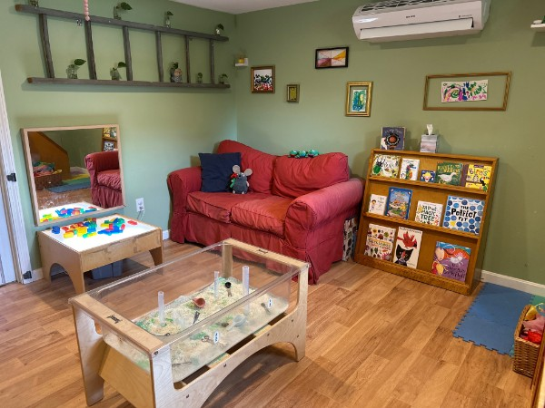
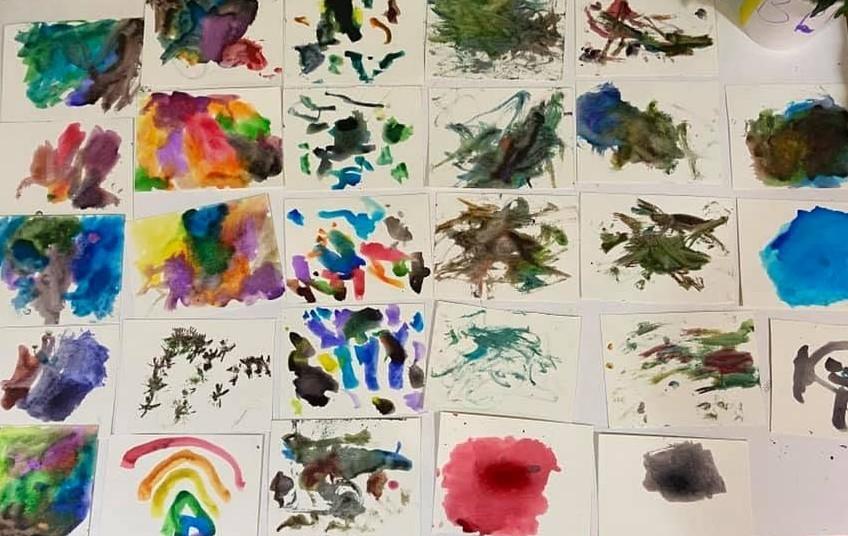
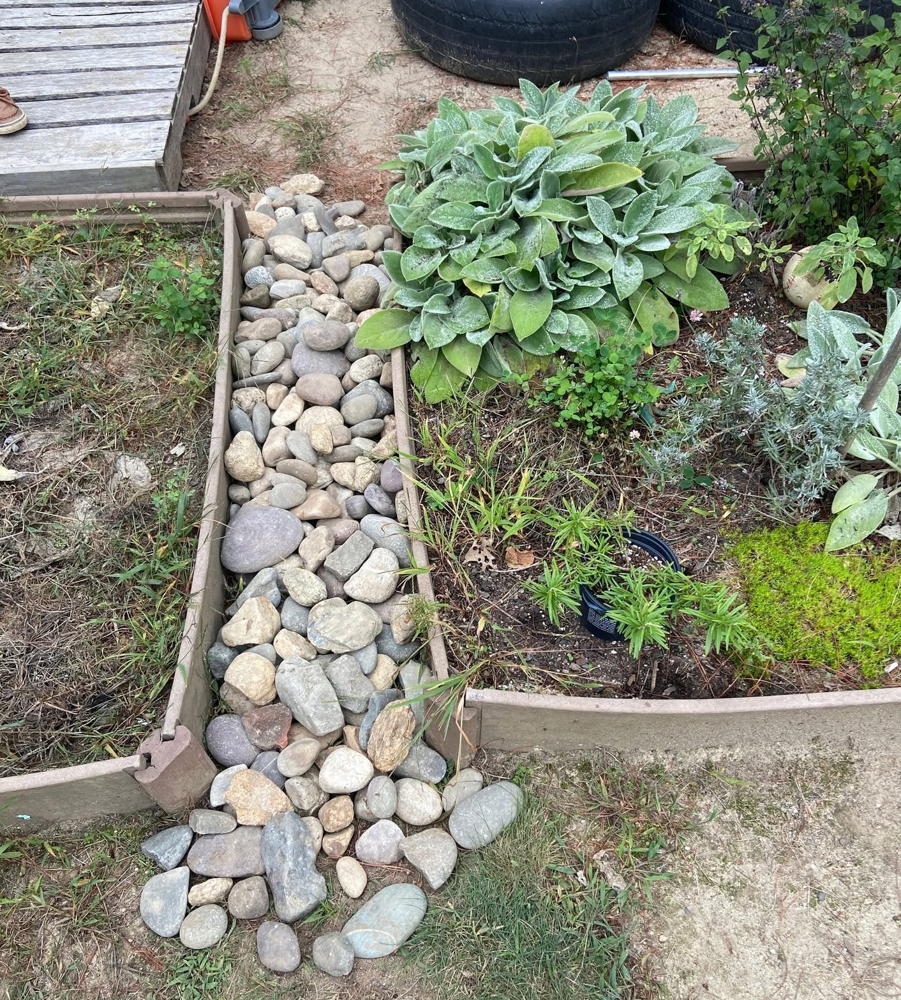
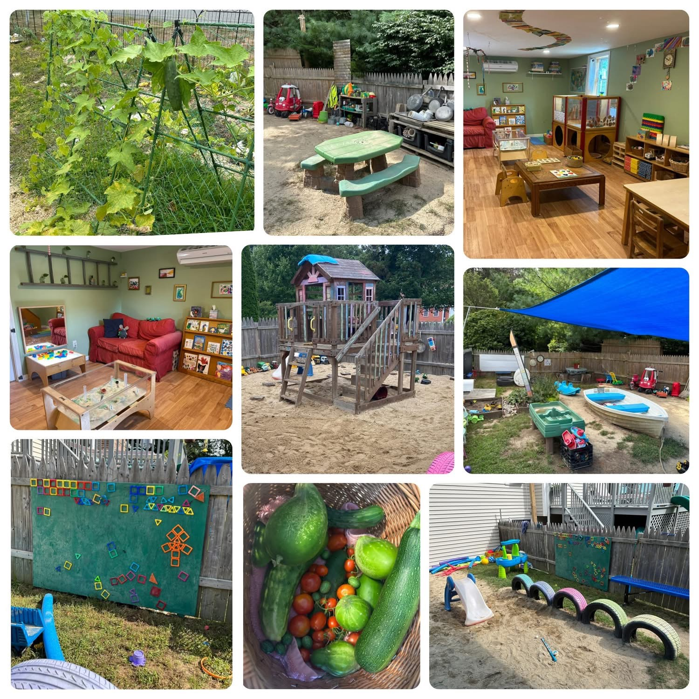

Nurturing care and sensory discovery
Responsive, individualized care supports each infant's routines, comfort, and development. Babies learn through sensory play, music, movement, stories, and gentle outdoor experiences.
Nature · Art · Exploration
A warm, home-based child care program in Falmouth where infants through age five receive individualized care and learn through play, exploration, and creativity.
Our nature-influenced program includes a spacious outdoor classroom and garden, giving children daily opportunities for discovery, movement, imagination, and connection with the natural world.

Availability
Full-time openings are currently available for children ages 2–5.
Families seeking care for infants and young toddlers, ages 0–2, are also encouraged to reach out about anticipated openings for early Spring 2027.
Because every family’s timing and care needs are different, we welcome inquiries about current and upcoming availability.
Our Program
At every age, children receive individualized attention, learn alongside a small mixed-age group, take part in creative hands-on activities, and spend meaningful time outdoors.
Responsive, individualized care supports each infant's routines, comfort, and development. Babies learn through sensory play, music, movement, stories, and gentle outdoor experiences.
Toddlers build language, confidence, coordination, and social skills through art, music, movement, imaginative play, and everyday routines. Outdoor time in the garden encourages exploration.
Preschoolers learn through hands-on art, nature exploration, conversation, imaginative play, and early problem-solving. Mixed-age experiences build cooperation, empathy, confidence, and kindergarten readiness.

About Julie
I have more than 25 years of experience in early childhood education, including work in both child care centers and family child care programs. I am committed to providing a safe, enriching, and developmentally appropriate home environment where every child is seen, valued, and supported.
Our Space





What Parents Say
“Julie has a wonderful child care program, we love watching our kids grow in such a nurturing environment with a lot of outdoor play and no screen time. We can't recommend Little Tugs enough.”
— Little Tugs parent
“Our sons thrive at Little Tugs! Julie is wonderful with the kids - endless learning, outdoor play, and fostering creativity and individuality. She cares for our kids as if they were her own.”
— Little Tugs parent
Get in Touch
Reach out to ask about current openings, upcoming availability, or whether Little Tugs may be a good fit for your family.